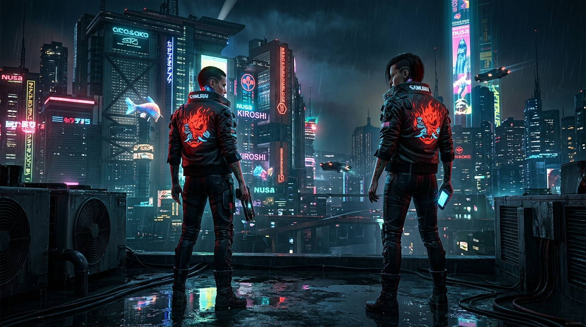
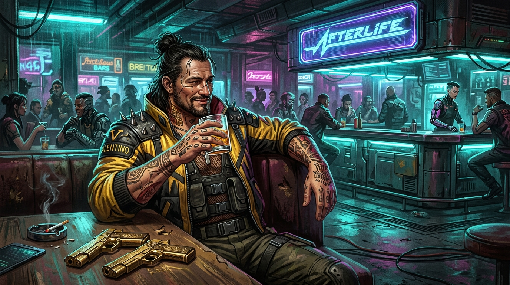
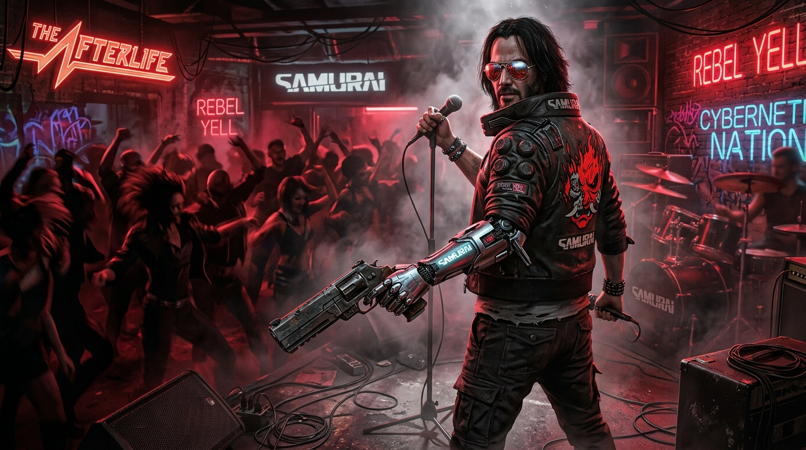
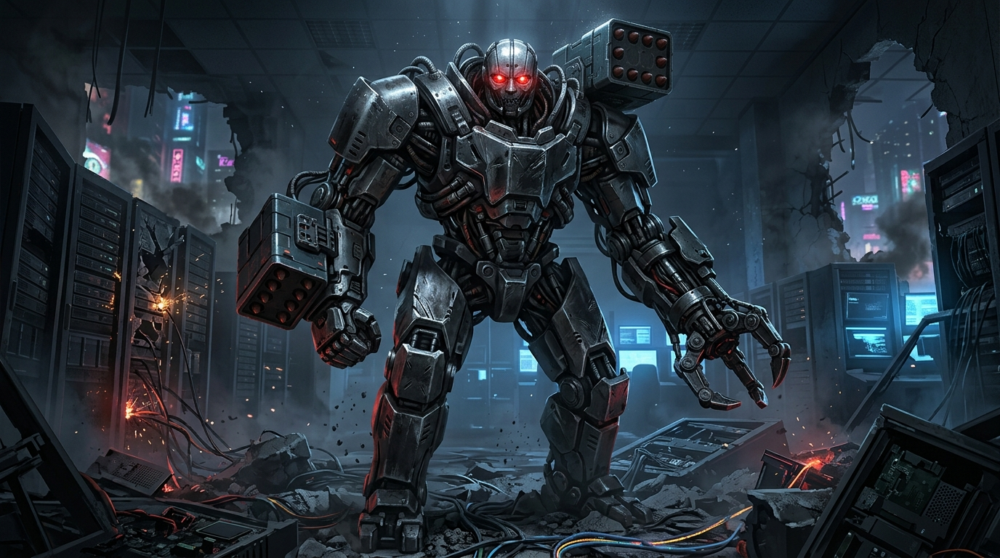
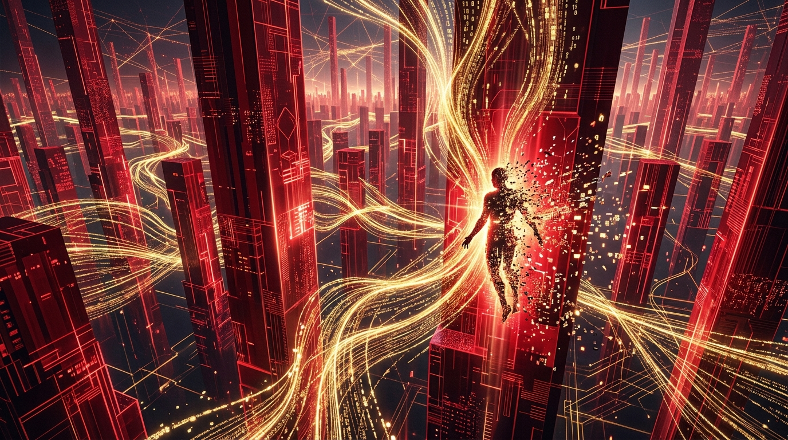

六幕剧情前因后果全景因果链
底色与前因 · 巨企绞肉机与扬名立万
"打赛博朋克2077千万别被炫酷的霓虹灯晃花了眼，它的内核是一出冰冷刺骨的社会悲剧！故事的大前因，是荒坂和军用科技等巨型企业垄断了一切，把夜之城变成了一台冷酷的绞肉机！普通人连呼吸都要交钱，底层雇佣兵只有两条路：要么像阴沟老鼠一样苟活到老，要么干一票惊天动地的大案、燃烧自己成为来生酒吧的一杯烈酒！主角V与好兄弟杰克，毫不犹豫地选择了后者！"
垄断一切的残酷体制
- 荒坂与军工寡头凌驾于政府之上，法律沦为私产
- 底层民众无路可走，义体化与神经病泛滥
来生酒吧的永恒法则
- 要么籍籍无名安享晚年，要么轰轰烈烈名垂青史
- 死后唯有一款以自己命名的鸡尾酒能证明存在
接下改变命运的超级委托
- 中介人德克斯特抛出橄榄枝：潜入荒坂偷取最高机密
- 一趟看似通往财富顶峰、实则步入深渊的绝命之旅
转折大劫案 · 绀碧大厦与血泊突围
"转折点正是那场名垂青史的“绀碧大厦大劫案”！V和杰克完美黑入顶层套房，成功拿到了荒坂最核心的机密——能够储存意识人格的Relic生物芯片！然而倒霉透顶的是，荒坂帝国的皇帝三郎突然空降，随后更发生弑父惨剧：少主赖宣亲手掐死了老爹，全城封锁！突围中杰克中弹牺牲，死前把芯片插进V的脑后。更恶心的是，幕后老板德克斯特为求自保，直接在汽车旅馆一枪爆了V的头！"
得手荒坂绝密Relic
- 顺利潜入五星级绀碧大厦，取得意识复制芯片
- 本以为即将一飞冲天跨入夜之城顶级传奇行列
意外撞破皇室内乱
- 荒坂赖宣亲手掐死父亲荒坂三郎，嫁祸外来杀手
- 最高警报拉响，机甲部队全城地毯式封锁追杀
杰克牺牲与绝境爆头
- 杰克重伤不治，在出租车里将芯片托付给V后闭眼
- 中间人德克斯特过河拆桥，一枪将V爆头弃尸垃圾场
生死危机 · 强尼银手与神经覆写
"然而V并没有死！Relic芯片内部受损启动自检修复，强行激活了脑细胞，但副作用是：芯片里封存的五十年前反抗企业的老派摇滚乐手——强尼·银手的意识被彻底唤醒！这根本不是起死回生，而是一张慢速死刑判决书！强尼的人格正在像纳米病毒一样疯狂覆写V的神经元，留给V的时间只剩几个星期！两人从互相掐脖子咒骂，到为了活下去被迫绑在一条战船上！"
Relic生物芯片死机修复
- 微型纳米机器人修复脑干损伤，强行重启生命体征
- 但代价是：植入脑中的强尼·银手意识被全面激活
不可逆转的神经覆写
- 强尼的人格正在像病毒般溶解消灭V的原生意识
- 吐血、眩晕、机能衰竭，死亡倒计时只剩短短数周
从拔枪相向到亦师亦友
- 从最初的抢夺身体控制权，到达成默契绝地反扑
- 为了活下去，唯一的生路就是杀入荒坂地下神舆！
突破高墙 · 游荡恶土与黑墙奥特
"为了自救，V踏遍了夜之城的三教九流！联手朱迪追查云顶，求助流浪者帕南用EMP干下荒坂浮空车抓捕赫尔曼，再跟着竹村密谋揭穿赖宣的谎言！最终的线索指向了赛博空间的绝对禁区——黑墙之外！强尼的前女友奥特·坎宁安已经进化成了神级AI，她给出了唯一的药方：杀入荒坂塔地下的数据殿堂“神舆”，用奥特的代码把V和强尼的意识彻底剥离！"
结识生死与共的真挚盟友
- 与恶土流浪者阿德卡多家族结下生死兄弟情义
- 携手竹村调查荒坂游行，一步步逼近核心机密
突破赛博禁区连线奥特
- 借助巫毒帮潜入深网，跨越黑墙联络AI奥特
- 得知Relic核心解法：唯有神舆才能剥离双重意识
夜之城最后的狂风暴雨
- 常规医疗宣告无效，身体机能逼近崩溃奇点
- 吹响总攻号角，准备向荒坂塔发起自杀式突袭！
巅峰决战 · 杀穿荒坂塔与手刃重锤
"决战爆发！无论是呼叫阿德卡多开着魔蜥坦克正面硬冲，还是听从强尼建议单枪匹马杀穿大堂，V都已经化身夜之城不可阻挡的死神！在荒坂塔最深处，横亘在神舆大门前的，是企业的终极看门恶犬——冷血屠夫亚当·重锤！这一战不仅是为了自救，更是为了给杰克、大卫以及无数死在重锤手下的佣兵复仇！枪林弹雨中，V亲手将重锤轰成一堆冒烟的废铁！"
单刀直入荒坂大厦核心
- 直面全副武装的荒坂精英卫队，弹雨洗礼无可阻挡
- 将企业的神圣大厦踩在脚下，直抵地下神舆数据核心
死斗企业噩梦亚当重锤
- 96%全身重装机械改造、手握重炮的冷血战争机器
- 不仅是实力对决，更是自由意志对企业极权的终极清算
彻底摧毁杀手神话
- 轰碎重锤机械核心，替杰克与夜之城亡灵血洗前仇
- 推开通往意识虚空的大门，踏入冰冷的神舆赛博空间
终局抉择 · 神舆赛博空间与传奇谢幕
"然而神舆里的真相残酷得令人窒息！奥特剥离了强尼，但V的身体细胞已经被Relic彻底改写成强尼的DNA，即便留下来，也只剩六个月生命！两个灵魂坐在数据的红天白桥上平静作别：强尼选择随奥特进入黑墙深空，将生的希望留给挚友；而V重新睁开眼，要么作为夜之城真正的活传奇登上太空站豪赌最后一战，要么与帕南驰骋在恶土的星空下！在这个没有活着的传奇的城市里，V活出了最烈的人性光芒！"
肉体DNA已被彻底改写
- 奥特冷酷宣判：身体已不容V的原生灵魂
- 即便重回肉身，免疫崩溃也只留给V最后六个月寿命
红天白桥上的真挚释怀
- 强尼放弃抢占肉身，选择与奥特步入浩瀚黑墙数据流
- 将最后的呼吸与自由，完整归还给这个年轻的搭档
向死而生的绚烂破晓
- 与阿德卡多翻越边境追寻希望，或踏上水晶宫终极挑战
- 夜之城没有活着的传奇，但V的名字永远镌刻在星空！
关键人物与核心场景档案

雇佣兵 V
向死而生的底层佣兵，在巨型企业的钢铁丛林中撞击命运。

杰克·威尔斯
海伍德最重情义的硬汉，倒在德拉曼出租车的后座血泊中。

强尼·银手
五十年前炸毁荒坂塔的传奇乐手，意识被困在Relic芯片之中。
流浪者 帕南 & 奥特
恶土阿德卡多的越野重机枪，与黑墙之外化身神明的超强AI。

亚当·重锤
百分之九十六义体化的冷血怪物，夜之城无数佣兵的噩梦终结者。

神舆赛博空间
储存千万灵魂的数据熔炉，夜之城传奇向死而生的最终抉择点。